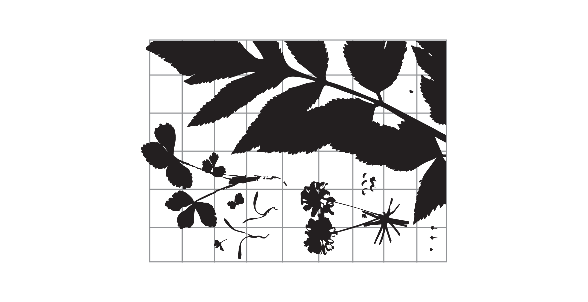
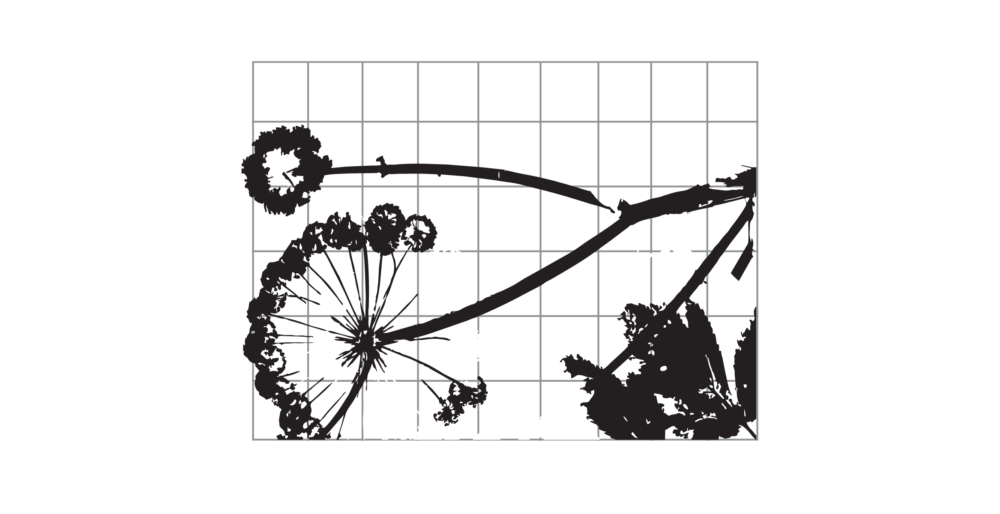

Millennium Seed Bank Project
index



"The Discourse of Separation"
“These ontological features are
extremely destructive to an Indigenous
knowledge position but share a space with
other skills and knowledge of the western
scientific world which may have use in
Indigenous lives. The issue is therefore
how to use such knowledge and skills while
not being captured within the deep core
of separation, domination and control
lurking in western knowledge systems.”
Delonix regia (Bojer ex Hook.) Raf.